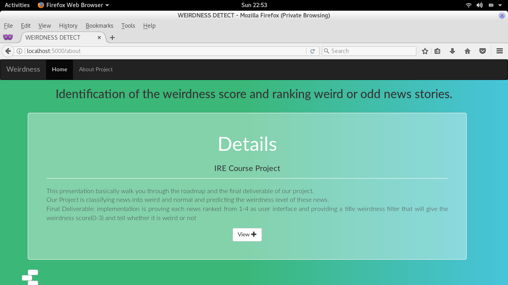
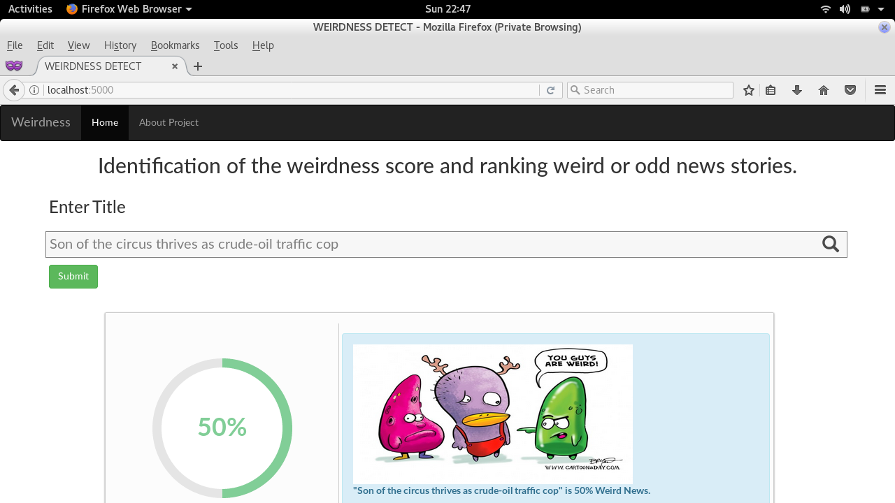
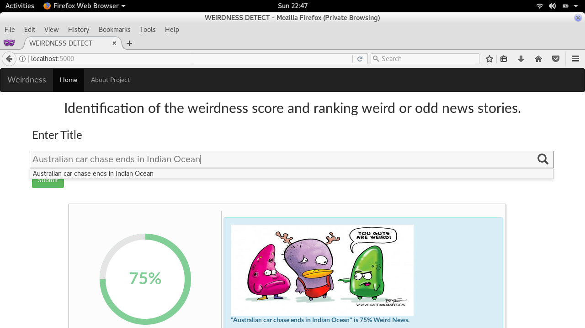

Problem Statement:
Our Project is classifying news into weird and normal and predicting the weirdness level of these news.
Applications
- Weird/Bizarre news refers to a news article which is so strange that users might question its credibility.
- Usually very rare, strange and unbelievable.
- Keeps the boredom away.
- Use bizarre news to gain readers attention and increase viewership.
Challenges
The news with nearly same object but different actions sometimes make a difference in detecting whether it is a normal or weird news. Same thing happen with same action but different objects. If we continue with object-action mapping, It may happen that some sentences such as title don’t have subject-predicate type of linking. Finding out the most important features to build and train the model.
Project Details
Presentation VideoDeliverable
You can download the working platform from link. Here you can enter the tile and get weirdness score if it is weird otherwise it will show normal news

Weird News Test 1
We tested on a title "Son of the circus thrives as crude-oil traffic cop". It is a weird news with 50% weirdness.
Australian car chase ends in Indian Ocean
Other test on title "Australian car chase ends in Indian Ocean". It shows It is a weird news with 75% weirdness.

References
Chen, Yimin, Niall J. Conroy, and Victoria L. Rubin. "Misleading online content: Recognizing clickbait as false news."
Proceedings of the 2015 ACM on Workshop on Multimodal Deception Detection. ACM, 2015.
Chakraborty, Abhijnan, et al. "Stop clickbait: Detecting and preventing clickbaits in online news media." Advances in Social Networks Analysis and Mining (ASONAM), 2016 IEEE/ACM International Conference on. IEEE, 2016.
Bajaj, Samir. "“The Pope Has a New Baby!” Fake News Detection Using Deep Learning."